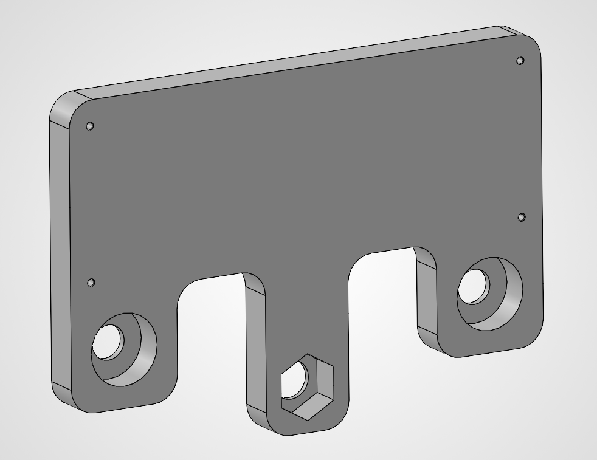
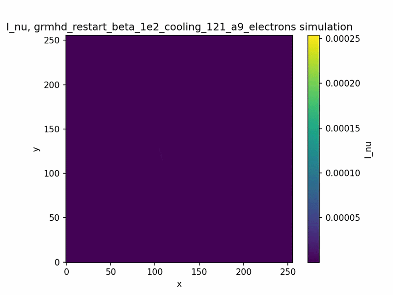
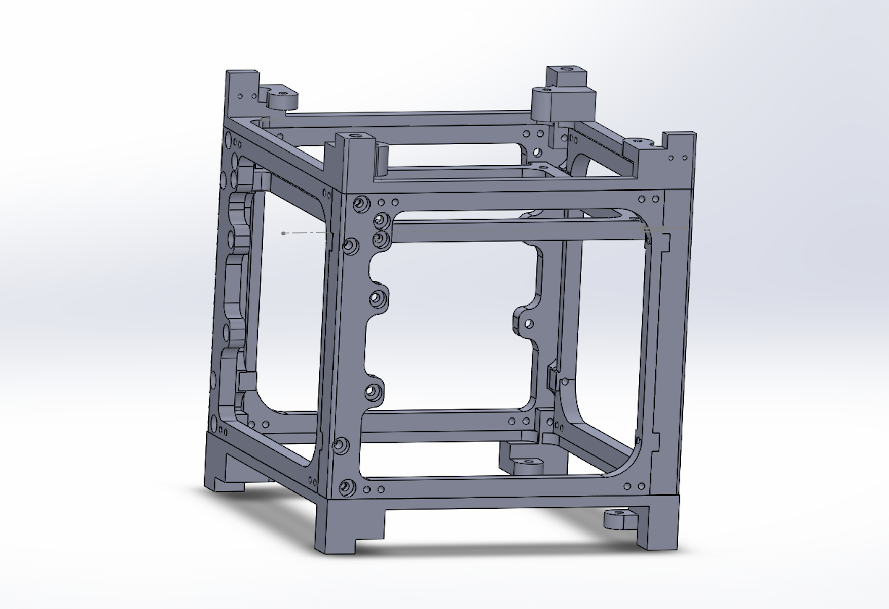
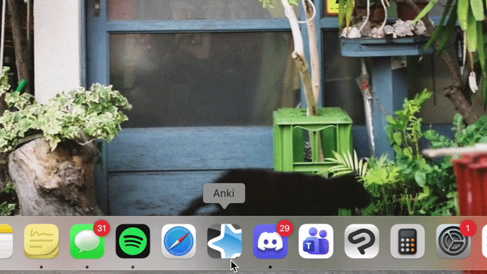
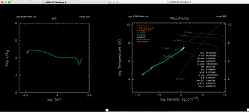
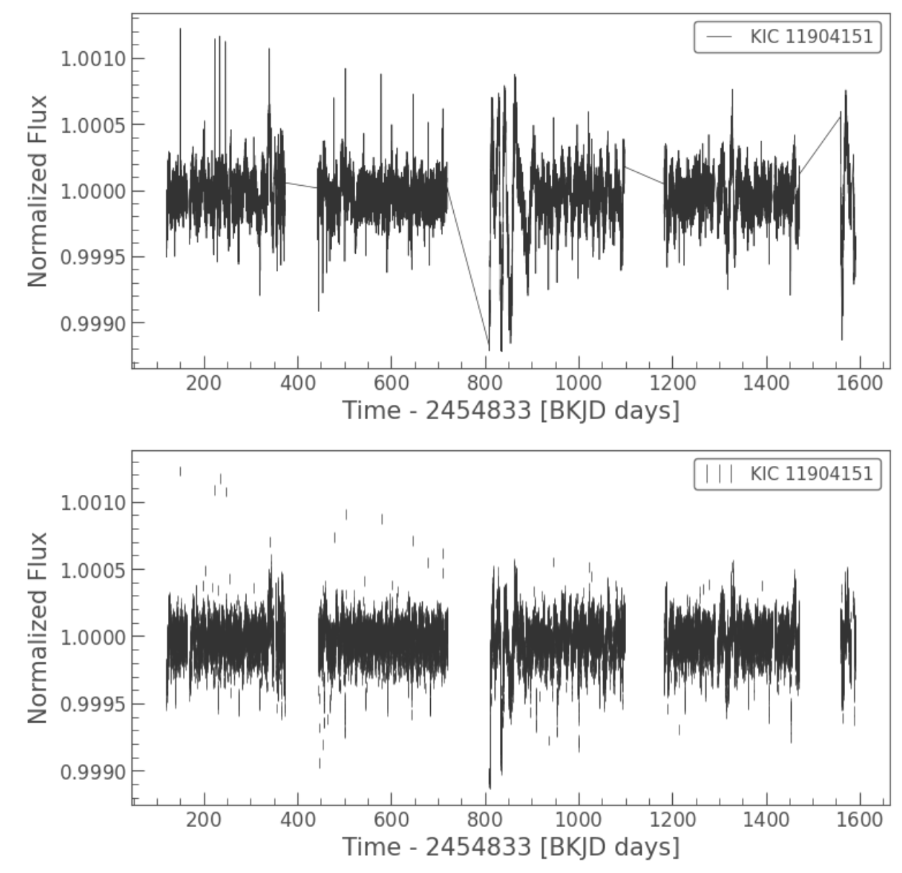
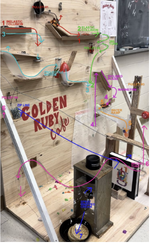

Modeling and 3D printing a PCB mounting system for solar panel testing.

Characterizing near-infrared thermal emissions from Sagittarius A*. Visualizing magnetohydrodynamic simulations and time series black hole data with photon trajectories. Supervised by Dr. Sean Ressler.

Building CubeSat satellites on SolidWorks for UW Orbital. Developing a Quantum Key Distribution system by determining the orientation of a infrared laser entering an Arducam.


Analysing the spin evolution of black holes within the convective core of a star. Designing simulations to represent quasi-star evolution. Supervised by Dr. Yanlong Shi.

Python-based workflow with Lightkurve to extract and analyse data from NASA’s space telescopes, TESS and Kepler. Identified exoplanets by applying transit light curve methods.

Rube Goldberg inspired machine consisting of 7 mechanical mechanisms to dispense whipped cream. Paired with a report quantifying the physics and measurements of the machine.